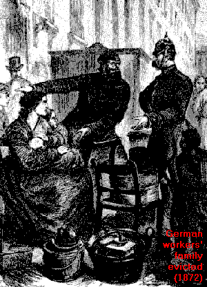
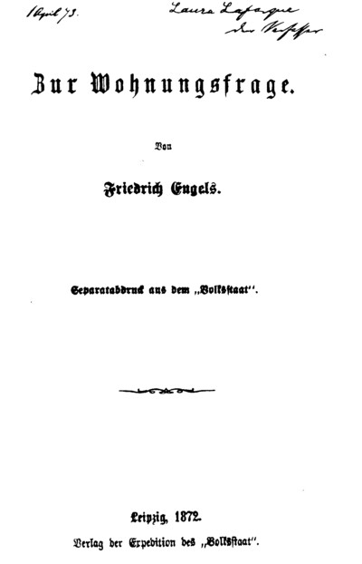

Works of Frederick Engels 1872

Written: 1872;
Published: (and re-published) as a pamphlet. Reprinted by the Co-operative Publishing Society of Foreign Workers;
Transcribed: Zodiac, June 1995.
During the 1870s, a major polemical debate unfolded in Germany’s worker/democratic press on the shortage of housing available to workers in major industrial centres. The influx and increase of the proletariat created a housing crisis.
On June 26 1872, Engels contributed the first of a series of articles to the Volksstaat, entitled “The Housing Question.” The last appeared on February 22 1873. Engels’ central point was that the revolutionary class policy of the proletariat cannot be replaced by a policy of reforms, because "it is not that the solution of the housing question simultaneously solves the social question, but that only by the solution of the social question, that is, by the abolition of the capitalist mode of production, is the solution of the housing question made possible."
The series criticizes Proudhonism (and petty-bourgeois socialism in general, including Lassalleanism). It also discusses things like the nature of the State, the dictatorship of the proletariat, the eradication of the antithesis between town and country, the solution of the agrarian problem, forms of the socialist reconstruction of society and the tasks of the proletarian party.
Preface to the second German edition (1887)
Part 1: How Proudhon Solves The Housing Question
Part 2: How The Bourgeoisie Solves The Housing Question
Part 3: Supplement On Proudhon And The Housing Question